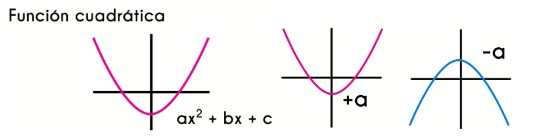
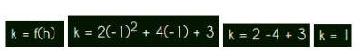

Álgebra: binomios, desigualdades, ecuaciones y función cuadrática
Función Cuadrática
La función cuadrática, también conocida cómo función de segundo grado es una función que tiene la forma de f(x) = ax2+bx+c. El máximo exponente que tiene la variable independiente en este tipo de funciones es 2.Se caracteriza porque los valores del rango de la función bajan y luego de haber pasado por el centro de la función vuelven a subir o viceversa, esto dependerá de la dirección de la función. Debido al comportamiento de la función cuadrática, al graficarla tiene una forma de “u” que se va abriendo y a esta forma se le conoce como parábola
Si se tiene la función f(x) = 6x^2+3x, los términos de esta función son: a=6, b=3 y c=0 y en f(x) = x^2+3, lo términos de esta función cuadrática son: a=1, b=0 y c=3. Es necesario aprender a encontrar estos términos al ver la ecuación de la función porque sabiendo cada uno de los términos se puede graficar o encontrar el dominio y rango de cualquier función cuadrática sin necesidad de realizar procesos que pueden llegar a ser mas tediosos y complejos.
Un polinomio es una suma de términos en cuales cada unoes el producto de coeficientes y una o mas variables. Sus variables tienen exponentes enteros, no negativos y no aparecen en el denominador. Si su exponente es 0 entonces el termino se reduce a una constante. Sus términos son de la forma a_n * x^n donde a_n es alguna constante (es decir, en los que aparece solamente una variable) se llama polinomio en x y se representa como P(x), Q(x), f(x), etc.
Hacia donde abren las graficas de la funciones cuadráticas va a depender del término “a”, si el término “a” es positivo, entonces la función cuadrática se abrirá hacia arriba, caso contrario, si el término “a” es negativo la parábola de la función cuadrática se abrirá hacia abajo, por lo que se puede determinar la forma de la función simplemente viendo la ecuación de la misma
Vertice de una función cuadrática
El vértice en una función cuadrática es el punto más alto (si la parábola abre hacia abajo) o es el punto más bajo (si la parábola abre hacia arriba) de la grafica de la función en el eje “y”, el vértice es también el punto medio de la parábola en el eje “x” y este divide a la función en 2.
Para encontrar las coordenadas del vértice se debe saber que las coordenadas de este se escriben de la forma (h,k) donde “h” es la coordenada en “x” del vértice y “k” es la coordenada en “y”, se escriben con estas letras para no confundirse con la forma de la función.
Para definir la ubicación del vértice se hace uso de unas formulas en las que se usan los términos de la función.
Ejemplo:
f(x) = 2x^2 + 4x + 3, al ver la función se puede observar que los términos de la función son: a = 2, b = 4 y c = 3
Buscamos el valor de k
Por lo tanto, las coordenasas (h,k) del vertice esta en (-1,1)
Información de: